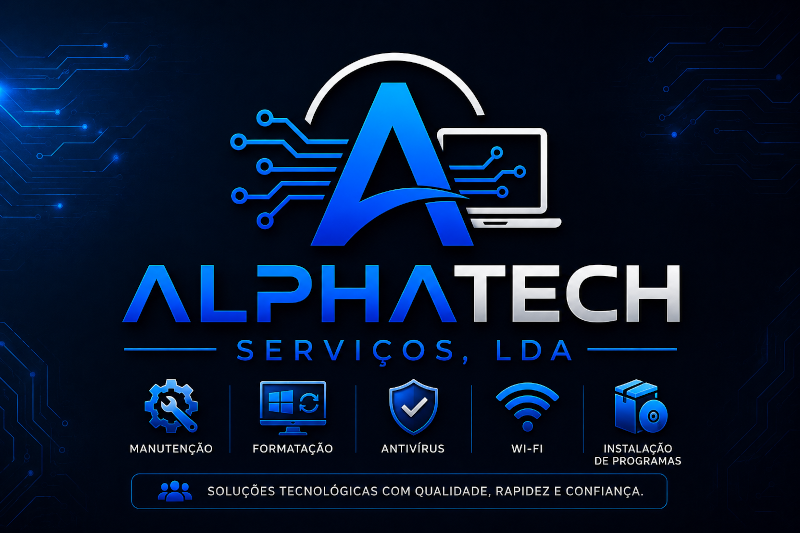

Quem Somos
Tecnologia que aproxima pessoas.
A AlphaTech Serviços, LDA é uma empresa angolana localizada em Luanda, especializada na prestação de serviços de informática e tecnologia.
Nascemos com o objetivo de oferecer soluções tecnológicas modernas, eficientes e acessíveis para estudantes, residências, escritórios e pequenas empresas.
Acreditamos que a tecnologia deve facilitar a vida das pessoas, por isso trabalhamos com profissionalismo, responsabilidade e compromisso para garantir a satisfação dos nossos clientes.
Os Nossos Serviços
Manutenção de Computadores
Diagnóstico e reparação de computadores desktop e portáteis.
Formatação e Instalação
Instalação de Windows, drivers e programas essenciais.
Remoção de Vírus
Eliminação de vírus, malware e otimização do sistema.
Instalação de Softwares
Instalação e configuração de programas profissionais.
Configuração de Redes Wi-Fi
Instalação e configuração de redes domésticas e empresariais.
Assistência Técnica
Suporte técnico presencial e remoto.
Otimização de Computadores
Melhoramos o desempenho do seu computador.
Consultoria Informática
Ajudamos a escolher as melhores soluções tecnológicas.
Por que escolher a AlphaTech?
- ✔ Atendimento rápido
- ✔ Técnicos qualificados
- ✔ Serviços com garantia
- ✔ Preços competitivos
- ✔ Soluções personalizadas
- ✔ Compromisso com a qualidade

Missão
Oferecer serviços tecnológicos de qualidade, garantindo soluções rápidas, eficientes e acessíveis para todos os nossos clientes.
Visão
Ser uma empresa de referência em assistência informática e suporte tecnológico em Angola, reconhecida pela inovação, confiança e excelência.
Os Nossos Valores
- Profissionalismo
- Honestidade
- Responsabilidade
- Inovação
- Qualidade
- Compromisso com o Cliente
Quem Atendemos
Atendemos clientes de diversos segmentos:
- Estudantes
- Professores
- Pequenas Empresas
- Escritórios
- Residências
- Utilizadores de Computadores
- Negócios Locais